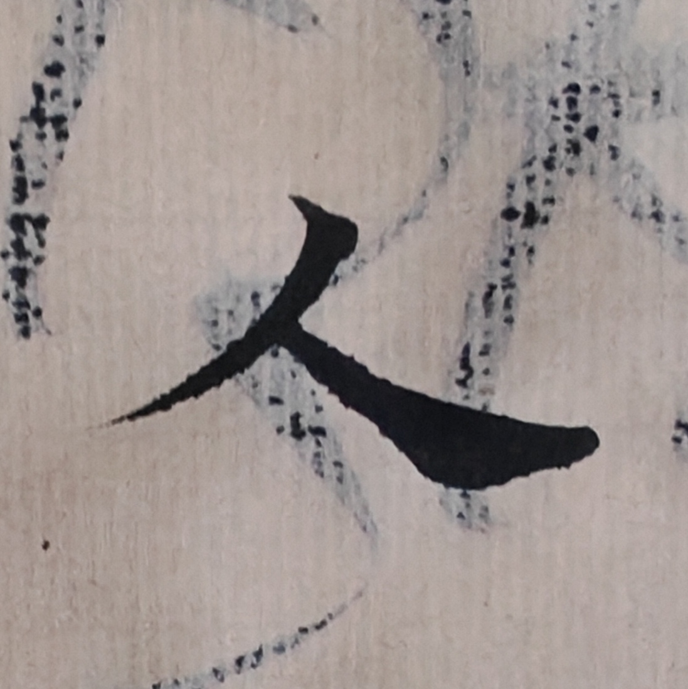
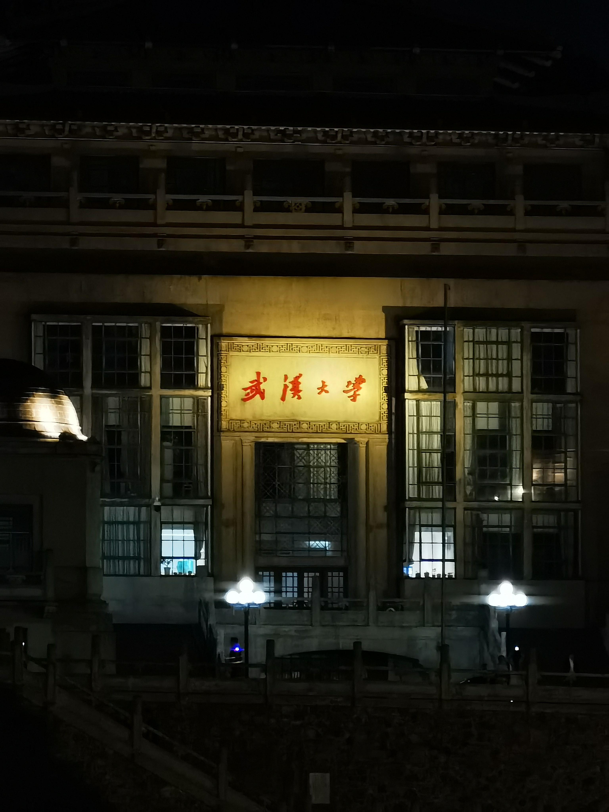

基于 Three.js 的实时渲染物理实验。观察数据集从高维随机混沌向低维矩阵晶格的坍缩降维过程，探讨信息熵的演化。
基于 Python (Manim) 引擎预渲染的数学与算法模型仿真动画。
Download Current Video
关于社会科学、哲学思考以及街头/纪实摄影艺术的非结构化记录。


// 街头纪实与光影切片 (可横向滚动)
底层工程架构、前端开发实践与自动化部署 (CI/CD) 流水线笔记。连接现实与数字世界的工具库。
// System.pending('code_repos')